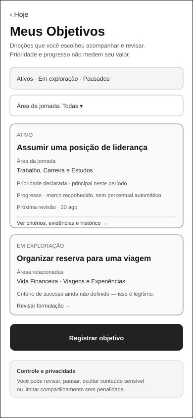
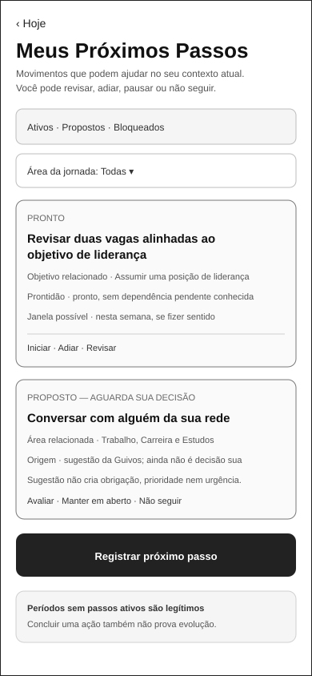
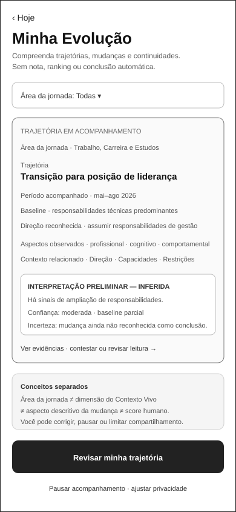

Jornada Integrada da Pessoa¶
1. Início protegido e compreensão inicial¶
Home pública
→ entrada protegida
→ escolha de modalidade
→ expressão guiada
→ inventário e autorização
→ processamento visível
→ compreensão inicial revisável
→ TRN-007 integralmente validada
→ primeira Tela Hoje
→ experiência recorrente e continuidades autorizadas
A UXA-097 valida integralmente PER-007 → PER-008. A primeira variante de Hoje não presume avanço, mudança anterior, urgência ou conteúdo comercial e usa somente condição confirmada, autorizada e vigente.
A jornada completa permanece draft: TRN-001, TRN-003, TRN-004 e TRN-005 ainda não estão validadas ponta a ponta.
2. Eixo de Domínios de Evolução¶
A D4 propaga para esta vista o vocabulário canônico de PAS-001-DOMAIN-MODEL-001 e a reconciliação de PAS-001-DOMAIN-RECON-001.
A Jornada da Pessoa é lida em dois eixos simultâneos:
como a jornada acontece
×
sobre qual área da vida/evolução a jornada está tratando
| ID | Domínio | Exemplos de contexto da Pessoa |
|---|---|---|
JED-001 |
Saúde e Bem-estar | hábitos, atividade física, sono, alimentação, autocuidado, prevenção, qualidade de vida |
JED-002 |
Trabalho, Carreira e Estudos | emprego, recolocação, carreira, cursos, estudos, competências, certificações, liderança |
JED-003 |
Vida Financeira | orçamento, reserva, renda, dívida, planejamento e organização financeira |
JED-004 |
Empreendedorismo e Projetos | ideia, negócio, projeto pessoal, validação, parceiros e execução |
JED-005 |
Relacionamentos e Vida Social | família, amizades, convivência, pertencimento e novas conexões |
JED-006 |
Espiritualidade, Propósito e Valores | fé, espiritualidade, propósito, valores, reflexão e comunidade escolhida |
JED-007 |
Viagens, Lazer, Cultura e Novas Experiências | viagens, hobbies, cultura, lazer, eventos e experiências desejadas |
JED-008 |
Causas, Voluntariado e Contribuição | voluntariado, causas, participação comunitária, contribuição e serviço |
JED-009 |
Organização e Equilíbrio da Vida | rotina, prioridades, tempo, equilíbrio e reorganização após mudanças |
Uma leitura semântica possível é:
Pessoa
→ Momento Atual
→ domínio declarado/candidato
→ Direção
→ Objetivo
→ Próximo Passo
→ Oportunidades compatíveis e relevantes
→ Experiência
→ Evidências legítimas
→ Evolução reconhecida pelo participante
O domínio pode aparecer antes, durante ou depois da formulação de um Objetivo. A Pessoa não deverá ser obrigada a classificar seu relato para continuar quando a capacidade aplicável não exigir essa classificação.
Multidomínio é legítimo. Ainda estou descobrindo permanece estado legítimo de exploração e não constitui JED-010; other_unmapped preserva área ainda não representada adequadamente.
Regras desta vista:
domain_linkpode ser0..n, temporal e revisável;- domínio candidato não equivale a domínio confirmado;
- domínio não é identidade permanente, diagnóstico, score, prioridade humana ou prova de evolução;
- saúde, espiritualidade, finanças e outros contextos sensíveis preservam finalidade, autoridade e proteção próprias;
- plano pago, patrocínio ou oferta comercial não altera domínio nem relevância funcional;
- D5-A e D5-B materializam o eixo em superfícies existentes;
- D5-C1 contrata Objetivos, Próximos Passos e Evolução;
- D5-C2 materializa um estado-base low-fidelity para cada uma dessas três responsabilidades;
- D5-C3 reforma e valida funcionalmente esses três estados-base no limite local;
- D5-C4A governa a navegação entre Hoje e as três responsabilidades;
- D5-C4B valida integralmente
TRN-008..013no limite documental sem transformar contexto ou domínio em decisão, prioridade, progresso ou evolução.
3. Direção, movimento e evolução a partir de Hoje¶
A estrutura governada é:
PER-008 — Hoje recorrente
├── TRN-008 → PER-010 — Meus Objetivos
│ └── TRN-009 → PER-008
├── TRN-010 → PER-011 — Meus Próximos Passos
│ └── TRN-011 → PER-008
└── TRN-012 → PER-012 — Minha Evolução
└── TRN-013 → PER-008
A D5-C2 materializa e a D5-C3 reforma/valida localmente:
PER-010emd5-c2-person-objectives-mobile.svg;PER-011emd5-c2-person-next-steps-mobile.svg;PER-012emd5-c2-person-evolution-mobile.svg.
A D5-C4A reforma e revalida localmente o estado recorrente de PER-008 em uxa-006-hoje-mobile.svg para materializar as origens dos três handoffs sem criar novo SVG. O estado recorrente passa a exibir, no bloco existente de continuidade:
Meus Objetivos
Abrir este passo
Minha Evolução
A primeira variante de Hoje permanece inalterada e não é obrigada a expor esses aprofundamentos durante a orientação inicial.
As superfícies possuem validação funcional local vigente e TRN-008..013 estão integralmente validadas no limite documental pela D5-C4B.
3.1 PER-010 — Meus Objetivos¶
PER-010 governa compreensão, organização e controle dos objetivos da Pessoa. Após D5-C3, o estado-base explicita estado funcional, prioridade declarada, Área da jornada, progresso qualitativo, revisão, critérios/evidências e controles de privacidade, sem percentual automático de progresso.
Domínio de Evolução
≠ Objetivo
≠ prioridade
≠ critério de sucesso
≠ progresso
Área da jornada permanece distinta de dimensão estrutural do Contexto Vivo. Prioridade declarada não representa valor humano, obrigação ou urgência automática.

3.2 PER-011 — Meus Próximos Passos¶
PER-011 governa movimentos contextuais, não uma lista coercitiva de tarefas. Após D5-C3, o estado-base distingue PRONTO de PROPOSTO, explicita prontidão/dependência e origem da proposta, e utiliza ações coerentes com cada estado.
domínio relacionado
≠ obrigação
≠ urgência
≠ prontidão
≠ execução
≠ prova de evolução
Uma sugestão da Guivos não constitui decisão da Pessoa. Períodos sem Próximos Passos ativos são legítimos.

3.3 PER-012 — Minha Evolução¶
PER-012 governa compreensão e controle de trajetórias, mudanças, continuidades, evidências, confiança, incerteza, interpretações e contestações.
Após D5-C3, o estado-base torna explícitos período, baseline, direção, natureza inferida da interpretação, confiança, incerteza e possibilidade de contestação/revisão.
Domínio de Evolução
≠ dimensão estrutural do Contexto Vivo
≠ aspecto descritivo da mudança
≠ trajetória
≠ score
Minha Evolução não é roda da vida obrigatória, ranking, percentual global da Pessoa, diagnóstico ou avaliação espiritual. Inferência permanece visualmente distinta de fato confirmado.

3.4 Papel de Hoje¶
PER-008 permanece síntese recorrente, não dashboard completo das três capacidades.
Hoje sintetiza
→ direção atual, quando relevante
→ movimento atual, quando relevante
→ mudança ou continuidade relevante, quando legítima
superfícies especializadas
→ aprofundam e oferecem controle
D5-C4A não cria três cards permanentes. Os três acessos são affordances compactas e neutras. Minha Evolução não afirma que houve mudança; Abrir este passo não inicia ou conclui o passo; Meus Objetivos não cria ou prioriza objetivo.
3.5 Handoffs integrados validados¶
Não existem handoffs diretos governados entre PER-010, PER-011 e PER-012. Relação semântica entre Objetivo, Próximo Passo e Evolução não é evidência suficiente de necessidade de navegação direta.
A D5-C4B valida TRN-008..013 no limite documental após examinar:
- identidade preservada quando houver objeto explicitamente acionado;
- contexto semântico mínimo;
- revalidação no destino;
- retorno sem mutação implícita;
- interrupção sem efeito funcional;
- concorrência resolvida pelo estado vigente;
- idempotência da navegação;
- proteção adicional de sensibilidade e natureza epistemológica em
TRN-012/013.
Para TRN-008/010/012, a validação se aplica ao Hoje recorrente quando o affordance correspondente estiver presente e aplicável. A ausência do affordance na primeira variante não representa quebra do handoff.
TRN-008..013 integralmente validadas documentalmente
≠ roteamento implementado
≠ persistência implementada
≠ produto disponível
4. Descoberta de oportunidades e saída consciente¶
A UXA-098 fecha a continuidade entre descoberta territorial e Detalhe; a UXA-101 fecha V4 até a fronteira externa:
PER-201 — Mapa
↔ TRN-210 — mesma consulta
→ PER-202 — Lista territorial
PER-201 → TRN-204 → PER-203 — Detalhe
PER-202 → TRN-211 → PER-203 — Detalhe
PER-203
→ “Ver como participar”
→ estado de revisão de saída em PER-203
→ confirmar destino/responsável/dados e limites
→ TRN-205
→ BND-001 — autoridade externa
Regras integradas:
- Mapa e Lista preservam contexto, busca, filtros, seleção e permissões aplicáveis;
- Mapa e Lista conduzem à mesma oportunidade lógica em
PER-203; - abrir Detalhe não equivale a interesse, inscrição, recomendação ou evolução;
Ver como participarabre revisão dentro dePER-203antes da saída;- continuar exige ação afirmativa e revalidação do destino conhecido/autorizado;
Voltar ao detalheé caminho legítimo sem penalidade;- alcançar
BND-001transfere autoridade ao terceiro; a Guivos não presume resultado externo.
Referência visual revalidada pela UXA-101:

5. Planos como etapa transversal canônica¶
A UXA-100-A3 registra Planos e a UXA-100-A4 fecha a identidade documental da origem voluntária:
PER-009 — Conta e configurações
├── TRN-406 → PER-301 — Planos e comparação
│ ├── TRN-401 → PER-302 — revisão de contratação
│ │ └── TRN-402 → PER-304 — resultado/recuperação
│ │ └── TRN-405 → PER-301
│ ├── TRN-403 → PER-303 — downgrade/cancelamento
│ │ └── TRN-404 → PER-304
│ │ └── TRN-405 → PER-301
│ └── TRN-407 → PER-009 — retorno sem alteração de plano
TRN-401..405 permanecem localmente validadas. TRN-406/407 permanecem contratadas porque PER-009 ainda não possui materialização visual própria.
Abrir Planos não seleciona plano, inicia cobrança, consome cota ou amplia consentimento. Pagamento não altera relevância, confiança, posição orgânica nem garantia de evolução.
6. Pessoa em Coletivos¶
Explorar Coletivos
→ Resultados de Busca
→ Perfil Público
→ Revisão e Solicitação
→ Solicitação Pendente
→ resultado aprovado
→ Meus Coletivos
→ Central de Atualizações
→ Início do Participante
| Etapa | Maturidade | Referência | Continuidade integrada |
|---|---|---|---|
| descoberta e busca | validado | UXA-060/061 | parcial |
| Perfil Público | validado | UXA-062/063 | parcial |
| revisão e solicitação | validado | UXA-064/065 | parcial |
| Solicitação Pendente | validado | UXA-066/067/092 | TRN-105/106/107/109; TRN-108 |
| Meus Coletivos | validado | UXA-091/092/094 | TRN-108 e TRN-110 integrais |
| Central de Atualizações | validado | UXA-093/094/095/096 | TRN-110 e TRN-111 integrais |
| Início do Participante | validado | UXA-095/096 | TRN-111 integral |
7. Proteções preservadas¶
- conclusão da compreensão inicial não equivale a avanço humano;
- personalização não é condição para acessar Hoje;
- abrir Meus Objetivos não cria, confirma ou prioriza objetivo;
- abrir Meus Próximos Passos não inicia, aceita ou conclui movimento;
- abrir Minha Evolução não presume mudança, progresso ou evolução reconhecida;
- contexto de navegação não amplia consentimento nem autorização;
- conteúdo sensível nas três superfícies especializadas exige minimização e controle;
- oportunidade publicada não é automaticamente recomendada;
- proximidade não equivale a relevância;
- patrocínio e plano pago não compram relevância funcional;
- abrir Planos voluntariamente não cria intenção de compra;
- sair para ambiente externo não amplia consentimento nem transfere a jornada pessoal por padrão;
- compartilhar pouco permanece legítimo;
- mesmo domínio entre Pessoa, Coletivo e Organização não cria match, recomendação ou compartilhamento automático.
8. Estado da vista¶
Esta vista permanece draft porque:
TRN-001,TRN-003,TRN-004eTRN-005ainda são parciais;- as transições comerciais internas de Planos são locais e não representam cobrança ponta a ponta;
PER-009ainda não possui materialização própria eTRN-406/407permanecem contratadas;- estados P0B adicionais permanecem separados;
- áreas internas especializadas a partir de
PER-108não foram validadas como conjunto; - outras continuidades da jornada pessoal ainda não foram examinadas ponta a ponta.
TRN-008..013 não são mais motivo de draft: a D5-C4B as valida integralmente no limite documental. TRN-205 também não é motivo de draft: a UXA-101 a valida integralmente até BND-001, sem validar o processo externo posterior.
9. Estado atual¶
V1, V2, V3 e V4 estão encerradas nos respectivos limites documentais. D4 torna JED-001..JED-009, multidomínio, Ainda estou descobrindo e other_unmapped explícitos nesta vista. D5-A/B materializam o eixo em superfícies existentes; D5-C1 contrata PER-010..012 e TRN-008..013; D5-C2 materializa as três superfícies; D5-C3 reforma e valida localmente os três SVGs; D5-C4A reforma/revalida Hoje recorrente e governa o contrato; D5-C4B valida integralmente os seis handoffs no limite documental.
V5/UXA-102, D6, D7 e Engenharia de Produto permanecem não iniciados.